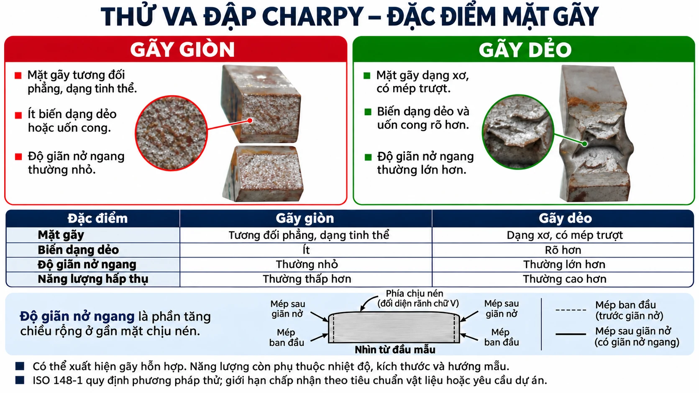
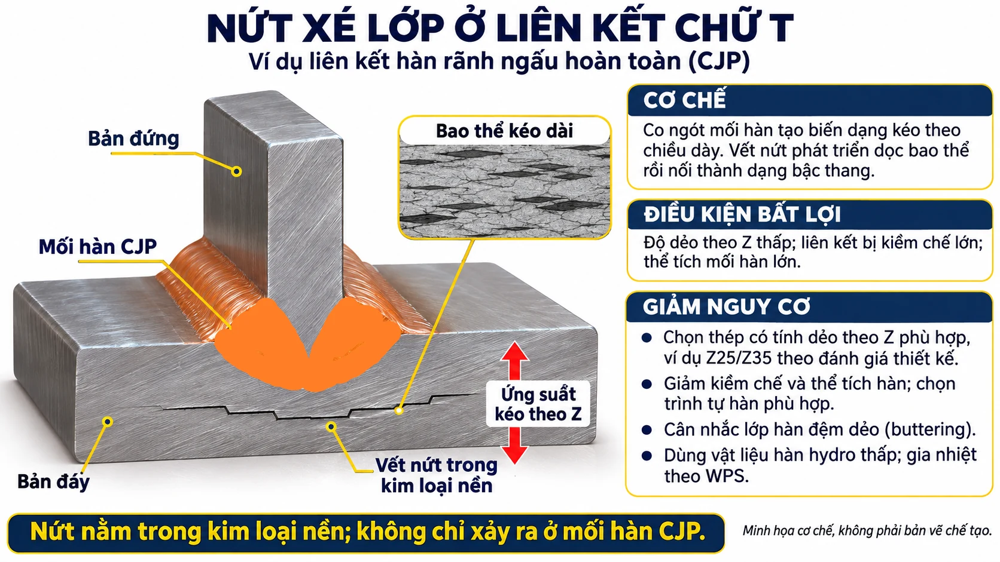
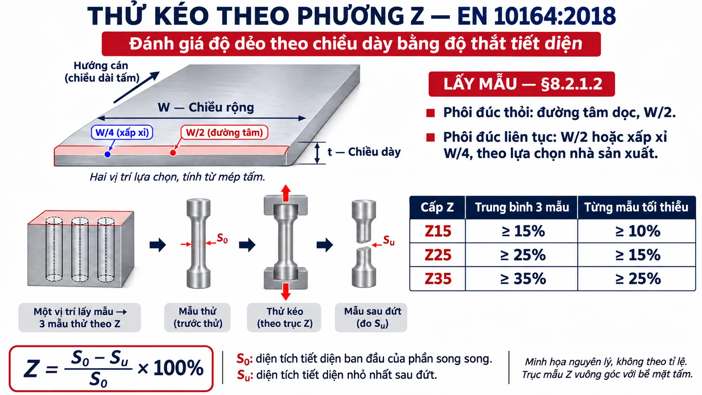
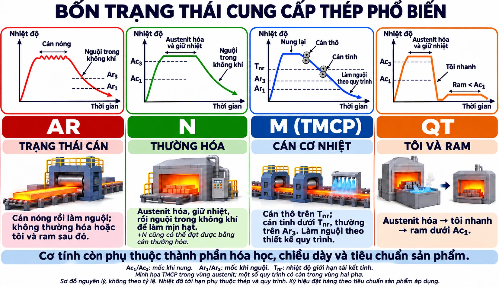
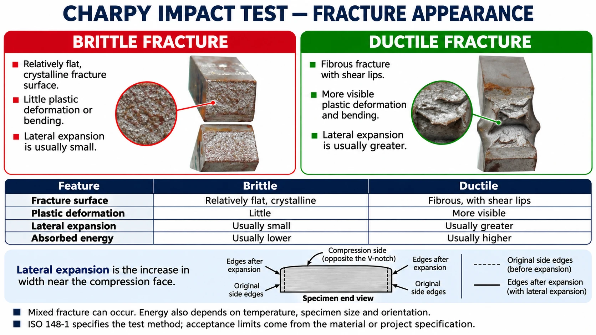
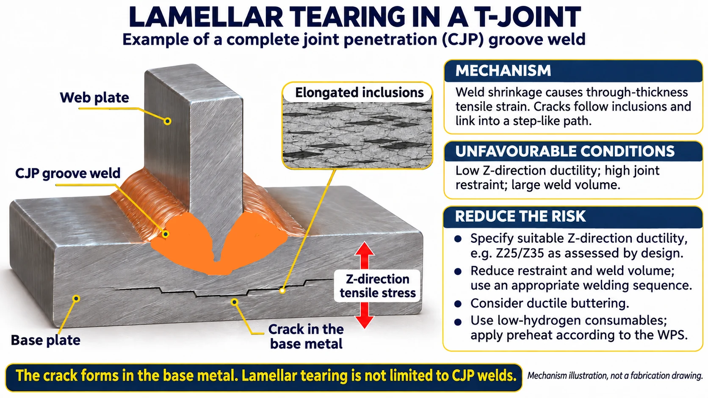
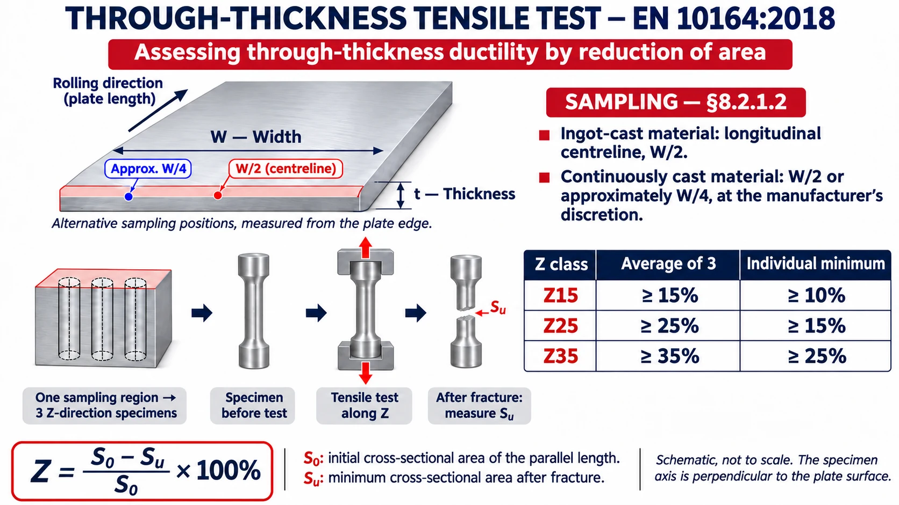
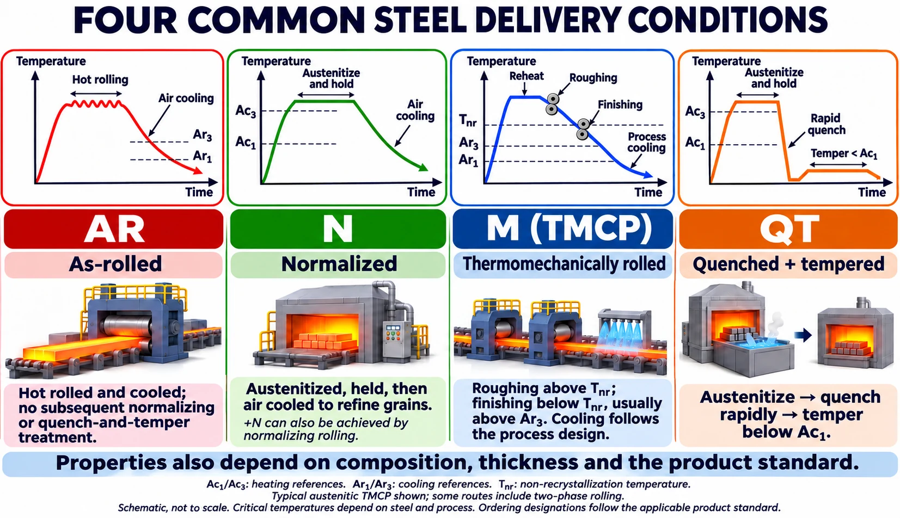

Hãy tưởng tượng một lô tấm “S355” vừa về kho. Bản vẽ ghi S355J2+N, phiếu giao hàng ghi S355, chứng chỉ ghi S355JR. Ba tờ giấy, ba cách viết, và chỉ một trong số đó khớp với thứ bạn đã đặt. Người nhận hàng nếu chỉ nhìn chữ “S355” sẽ cho qua; người QC phải nhìn ra rằng chữ cái và dấu cộng phía sau mới là chỗ quyết định.
Một mác thép thực chất là một bản hợp đồng kỹ thuật, mỗi ký tự trả lời một câu hỏi: chịu được bao nhiêu, có giòn khi lạnh không, đã nhiệt luyện thế nào, hàn có nứt không, có chịu được lực kéo theo chiều dày không. Bài này đi lần lượt qua từng câu hỏi đó, bằng ngôn ngữ của người làm xưởng.
Bốn hệ tiêu chuẩn, bốn cách đặt tên
Điều đầu tiên cần biết là cùng một con số mang ý nghĩa khác nhau tuỳ hệ tiêu chuẩn. Trong EN và GB, con số là giới hạn chảy. Trong JIS, con số là độ bền kéo. Trong ASTM, con số thậm chí chỉ là số thứ tự của tiêu chuẩn.
Đây là cái bẫy lớn nhất. S355 và Q355 có giới hạn chảy 355 MPa, nhưng SM490 không có giới hạn chảy 490 MPa. Con số 490 là độ bền kéo; giới hạn chảy chỉ 325 MPa. Tương tự, SS400 chỉ có ReH 245 MPa. Đọc nhầm một con số là đánh giá sai toàn bộ khả năng chịu lực của vật liệu.
Chứng chỉ vật liệu: tờ giấy mà mọi thứ dựa vào
Mọi kết luận về vật liệu cuối cùng đều dựa vào chứng chỉ của nhà máy cán, thường gọi là CTC hay MTC. Nó khác một tờ “giấy cam kết hàng đạt yêu cầu” ở chỗ có kết quả thử của chính lô thép đó. Trước khi đọc tiếp, hãy làm quen với những từ viết tắt sẽ gặp suốt trong bài.
| Viết tắt | Nghĩa |
|---|---|
| CTC / MTC | Chứng chỉ chất lượng của nhà máy, có kết quả thử của lô thép |
| CoC | Giấy tuyên bố phù hợp, không có kết quả thử (loại 2.1) |
| PO | Đơn đặt hàng: mác, tiêu chuẩn, loại chứng chỉ, yêu cầu bổ sung |
| ITP / NCR | Kế hoạch kiểm tra thử nghiệm / Báo cáo không phù hợp |
| WPS / PQR | Quy trình hàn / hồ sơ chứng minh quy trình hàn |
| NDT · EXC | Kiểm tra không phá huỷ (VT, UT, MT, PT, RT) · Cấp thực hiện theo EN 1090-2 |
Một lưu ý nhỏ nhưng hay gặp khi audit: các tiêu chuẩn thử cũ EN 10002-1 và EN 10045-1 đã được thay bằng EN ISO 6892-1 (thử kéo) và EN ISO 148-1 (va đập Charpy). Khi viết ITP hay NCR, hãy trích tiêu chuẩn còn hiệu lực. Trích một tiêu chuẩn đã huỷ là lỗi mà đánh giá viên sẽ ghi ngay.
Thử kéo: ba con số phải đối chiếu trên mọi chứng chỉ
Phép thử kéo cho ba con số mà bạn gặp trên mọi chứng chỉ. ReH là giới hạn chảy, chính là con số dùng để tính kết cấu. Rm là độ bền kéo, mà EN quy định cả cận trên lẫn cận dưới. A là độ giãn dài sau đứt: giá trị thấp nghĩa là thép giòn, và S355 thường yêu cầu từ 20 đến 22% tuỳ chiều dày.
Fy, Fu và chữ “Fe” gây hiểu nhầm
Trên bản vẽ theo chuẩn Mỹ, bạn sẽ thấy Fy và Fu: đó chính là ReH và Rm. Còn chữ “Fe” thì rắc rối hơn, vì nó có ít nhất ba nghĩa: giới hạn chảy thép thanh bê tông theo hệ Pháp, độ bền kéo trong mác châu Âu cũ như Fe 360, và nguyên tố sắt. Nó không phải ký hiệu chuẩn của giới hạn chảy trong AISC hay Eurocode.
Gặp “Fe” trên bản vẽ kết cấu thép thì đừng đoán. Tra bảng chú thích của bản vẽ, đối chiếu bảng vật liệu, và nếu vẫn chưa rõ thì phát RFI hỏi thiết kế. Mất một ngày chờ trả lời vẫn rẻ hơn nhiều so với cắt cả lô thép sai.
Va đập Charpy: vì sao thép đủ bền vẫn có thể gãy giòn
Cường độ mới chỉ là một nửa câu chuyện. Thép đủ bền vẫn có thể vỡ đột ngột, không báo trước, không biến dạng dẻo, nhất là khi trời lạnh. Phép thử Charpy đo năng lượng mà mẫu hấp thụ khi bị đập gãy, và kết quả thay đổi mạnh theo nhiệt độ: ở nhiệt độ cao thép dẻo và hấp thụ nhiều năng lượng, ở nhiệt độ thấp nó giòn và hấp thụ rất ít.
Nhìn đường cong, bạn sẽ hiểu hậu tố độ dai thực chất là gì: chỉ là một điểm thử trên đường cong, nghĩa là ở nhiệt độ nào, thép phải hấp thụ ít nhất 27 J. JR thử ở +20 °C, J0 ở 0 °C, J2 ở −20 °C. Bản vẽ ghi J2 mà kho giao JR là không đạt, dù cả hai đều là S355. Chứng chỉ cũng phải có đủ ba giá trị đơn lẻ, giá trị trung bình và nhiệt độ thử. Giá trị trung bình của ba mẫu phải đạt mức quy định; một giá trị đơn lẻ được phép thấp hơn nhưng không dưới 70% mức đó. Nếu không đạt, phải thử thêm ba mẫu và đánh giá cả sáu kết quả theo quy tắc thử lại của tiêu chuẩn sản phẩm (ví dụ EN 10025-3/-4:2019, điều 10.2.2).

Ba yếu tố đẩy thép vào vùng giòn là chiều dày lớn (trạng thái ứng suất ba trục và mức kiềm chế biến dạng cao hơn, lõi tấm thường hạt thô hơn và tập trung tạp chất), nhiệt độ thấp, và ứng suất dư do hàn. Một vết nứt vi mô ở vùng ảnh hưởng nhiệt, cộng với độ dai kém, có thể xé toạc liên kết ngay cả khi chưa chịu tải ngoài.
Ngoài mặt gãy, phép thử còn đo độ giãn nở ngang (lateral expansion): phần tăng chiều rộng của mẫu ở phía chịu nén. Gãy giòn thường ít biến dạng, độ giãn nở ngang nhỏ và năng lượng thấp; gãy dẻo thì ngược lại. Hai dạng có thể xuất hiện lẫn trong cùng một mẫu, và năng lượng còn phụ thuộc nhiệt độ, kích thước và hướng lấy mẫu. ISO 148-1 quy định phương pháp thử; mức chấp nhận do vật liệu hoặc yêu cầu dự án quyết định.
Bảng dưới đây đối chiếu các điều kiện thử giữa bốn hệ. Hãy để ý hai điểm: JIS nâng năng lượng (47 J) thay vì hạ nhiệt độ, và không có mác nào của JIS G3106 được thử ở −20 °C.
| Điều kiện thử | EN 10025 | GB | JIS G3106 |
|---|---|---|---|
| Không thử | — | A | A |
| +20 °C, 27 J | JR | B (34 J dọc / 27 J ngang) | — |
| 0 °C, 27 J | J0 | C (34 J dọc / 27 J ngang) | B |
| 0 °C, 47 J | — | — | C |
| −20 °C, 27 J | J2 | D (34 J dọc / 27 J ngang) | — |
| −20 °C, 40 J | K2, N, M | ND, MD (40 J dọc / 20 J ngang) | — |
| −40 °C, 31 J | NL / ML (mặc định thử ở −50 °C, 27 J) | NE, ME (31 J dọc / 20 J ngang) | — |
| −5 °C, 47 J | — | — | SM570 |
EN 10025 và GB mặc định thử mẫu dọc. Giá trị GB lấy theo GB/T 1591-2018 Bảng 11; EN 10025-3/-4 lấy theo Bảng 5 (mẫu dọc) và Bảng 6 (mẫu ngang, khi đặt hàng yêu cầu).
Với ASTM, độ dai không nằm trong tên mác. Muốn có Charpy với A572 phải đặt thêm Supplementary Requirement S5, hoặc dùng A709, vốn đã quy định theo vùng nhiệt độ sử dụng.
Hướng Z: hướng có độ dẻo thấp nhất của tấm thép cán
Tấm thép cán không giống nhau theo mọi hướng. Khi cán, các tạp chất bị kéo dẹt thành lớp theo hướng cán, nên độ dẻo và độ thắt tiết diện thường cao nhất theo hướng dọc (L), thấp hơn theo hướng ngang (T), và thấp nhất theo chiều dày (Z); đây là xu hướng chung, mức chênh lệch phụ thuộc độ sạch thép và công nghệ cán. Bình thường điều này không gây chuyện. Nhưng ở liên kết chữ T hay chữ thập, mối hàn co ngót lại kéo cánh theo đúng chiều dày, và các lớp tạp chất bị tách ra: đó là nứt xé lớp.

Vì vậy cần kiểm tra yêu cầu cấp Z ở liên kết chữ T, chữ thập và liên kết góc, ở tấm dày từ khoảng 30 mm, và ở mối hàn ngấu hoàn toàn truyền lực theo chiều dày. Phép thử hướng Z chỉ đo một thứ: độ thắt tiết diện RoA = (S0 − Su)/S0 × 100%, tức thép còn dẻo được bao nhiêu theo chiều dày. Kết quả chia thành ba cấp Z15, Z25, Z35.
Để giảm nguy cơ, có thể chọn độ dẻo hướng Z phù hợp (Z25 hoặc Z35 theo đánh giá thiết kế), giảm độ giằng và thể tích mối hàn, chọn trình tự hàn hợp lý, cân nhắc lớp đệm dẻo (buttering), dùng vật liệu hàn hydro thấp và gia nhiệt theo WPS. Cần nhớ rằng vết nứt nằm trong kim loại nền và nứt xé lớp không chỉ xảy ra ở mối hàn ngấu hoàn toàn (CJP).

Lưu ý quan trọng: EN 10164 đòi hỏi cả giá trị trung bình của ba mẫu lẫn từng mẫu. Nếu đặt Z25 mà ba mẫu cho 38%, 13% và 35%, trung bình 28,7% đạt nhưng một mẫu 13% thấp hơn giới hạn đơn lẻ 15%. Kết quả này chưa phải là kết luận cuối: theo EN 10164:2018 điều 9.1.3, phải thử thêm ba mẫu từ cùng mẫu vật liệu, và đơn vị thử chỉ đạt khi đồng thời: trung bình sáu mẫu ≥ giá trị trung bình quy định; không quá hai mẫu thấp hơn giá trị trung bình quy định; không quá một mẫu thấp hơn giới hạn đơn lẻ. Ví dụ ba mẫu thử lại cho 30%, 28% và 27%: trung bình sáu mẫu 28,5%, chỉ một mẫu dưới 25% và một mẫu dưới 15%, nên đạt Z25. Thiếu dòng Z trên chứng chỉ cũng đủ để phát NCR và không nhập kho.
Vị trí lấy mẫu theo EN 10164 điều 8.2.1.2: với phôi đúc thỏi, mẫu lấy ở đường tâm (W/2); với phôi đúc liên tục, lấy tại W/2 hoặc xấp xỉ W/4 theo lựa chọn của nhà sản xuất. Mỗi vị trí lấy ba mẫu thử hướng Z; kéo mẫu đến khi đứt rồi đo diện tích nhỏ nhất sau đứt Su.
Thành phần hoá học: CEV và Pcm trả lời câu hỏi “hàn có nứt không”
Các nguyên tố trong thép chia thành ba nhóm. Nhóm tăng bền nhưng làm thép khó hàn hơn gồm carbon, mangan, silic, crôm, molypden; trong đó carbon quyết định cả cường độ lẫn nguy cơ nứt nguội. Nhóm có hại cần khống chế chặt gồm phốt pho, lưu huỳnh, nitơ và hydro; hydro là nguyên nhân số một của nứt nguội mối hàn. Nhóm vi hợp kim như niobi, vanađi, titan, nhôm làm mịn hạt, còn canxi cải thiện tính chất hướng Z.
Để gói gọn tất cả vào một con số người ta dùng carbon tương đương CEV (hoặc Pcm cho thép cường độ cao, carbon thấp). CEV cho biết mức nhạy cảm với nứt nguội và là một đầu vào để tính nhiệt độ nung nóng sơ bộ. Pcm = C + Si/30 + (Mn+Cu+Cr)/20 + Ni/60 + Mo/15 + V/10 + 5B (GB/T 1591-2018, 7.1.4); hai công thức không thay thế tùy ý cho nhau, phải dùng đúng công thức mà tiêu chuẩn và phương pháp tính gia nhiệt yêu cầu. Hãy tính một ví dụ thật.
= 0.18 + 1.45/6 + 0.09/5 + 0.16/15 = 0,450
Điều QC cần nhớ: đừng chỉ chép lại CEV mà nhà máy khai báo. Hãy tự tính lại từ thành phần hoá học trên chứng chỉ và đối chiếu với WPS đang dùng. Đạt giới hạn CEV của EN 10025-2 không có nghĩa là không cần nung nóng sơ bộ. Với tấm 100 mm, nung nóng sơ bộ thường vẫn cần vì chiều dày tổ hợp lớn làm mối hàn nguội nhanh; nhiệt độ cụ thể tính theo EN 1011-2 từ CEV, chiều dày tổ hợp, hàm lượng hydro và nhiệt lượng đường, hoặc tra AWS D1.1.
Chiều dày làm giảm cường độ: lỗi hay gặp khi đọc chứng chỉ
Một lỗi rất phổ biến là đọc dòng đầu bảng. Giới hạn chảy tối thiểu của S355 không phải lúc nào cũng là 355: tấm càng dày thì con số tối thiểu càng thấp, vì tấm dày nguội chậm hơn khi cán và hạt thô hơn.
Tấm dày 100 mm chỉ cần ReH tối thiểu 315 MPa, thấp hơn 11% so với danh nghĩa. Nếu chứng chỉ ghi 342 MPa thì tấm đạt, không phải thiếu. Độ giãn dài, dải Rm và giới hạn CEV cũng đổi theo chiều dày. Vì vậy trong NCR luôn phải ghi rõ chiều dày, không chỉ ghi mác thép.
Trạng thái cung cấp: AR, N, M, QT
Hai tấm cùng mức cường độ 355 có thể được giao ở những trạng thái khác nhau tùy tiêu chuẩn sản phẩm (AR hoặc +N theo EN 10025-2, N/NL theo EN 10025-3, M/ML theo EN 10025-4; trạng thái tôi và ram Q/QL thuộc EN 10025-6 cho thép S460 trở lên), và điều này ảnh hưởng trực tiếp đến cách hàn. Cán nóng (+AR) là rẻ nhất nhưng tính chất kém đồng đều. Thường hóa (+N) nung lại trên Ac3 rồi cho nguội trong không khí, cho hạt mịn và dai ở nhiệt độ thấp. Cán nhiệt-cơ (+M, TMCP) đạt cường độ với hàm lượng carbon và hợp kim thấp hơn nên CEV thấp, rất dễ hàn; nhưng không được tạo hình nóng, và khử ứng suất trên 580 °C hoặc giữ quá 1 giờ có thể làm giảm cơ tính (EN 10025-4:2019, 7.3.1.1 và 7.4.2.2). Tôi và ram (+QT) nung, tôi nhanh rồi ram dưới Ac1 để lấy lại độ dai.

Có một sai lầm kinh điển: “tôi là làm nguội nhanh, ram là làm nguội chậm”. Không phải vậy: ram là nung lại dưới Ac1 rồi làm nguội. Với thép +M và +QT, gia nhiệt quá mức khi hàn hoặc nắn nhiệt sẽ phá hỏng tổ chức đã được tạo ra, nên phải khống chế nhiệt độ giữa các lớp hàn đúng như WPS.
Trạng thái thường hóa cũng có thể đạt được bằng cán thường hóa (normalizing rolling), và cơ tính còn phụ thuộc thành phần, chiều dày và tiêu chuẩn sản phẩm; cùng ký hiệu S355 không có nghĩa là cấp bền cao hơn chỉ vì đổi quy trình gia công.
Mang gì về xưởng
- Con số trong tên mác có thể là giới hạn chảy, độ bền kéo hoặc chỉ là số thứ tự: luôn biết mình đang đọc hệ nào.
- ReH phải đọc theo đúng dải chiều dày của tấm, không đọc dòng đầu bảng.
- Hậu tố độ dai là điều kiện thử va đập: sai hậu tố là sai vật liệu, dù cùng cấp cường độ.
- Tấm dày chịu kéo theo chiều dày cần cấp Z, thiếu dòng Z trên chứng chỉ là căn cứ phát NCR.
- “Tương đương” chỉ là gợi ý tra cứu; thay thế vật liệu chỉ hợp lệ khi có phê duyệt bằng văn bản.
Bài tiếp theo sẽ đi ngược về nguồn: thép được làm ra như thế nào, và vì sao quy trình chế tạo lại quyết định những rủi ro mà bạn vừa đọc ở trên.
Imagine a lot of “S355” plates has just arrived at the store. The drawing says S355J2+N, the delivery note says S355, the certificate says S355JR. Three papers, three ways of writing, and only one matches what you ordered. Someone who only looks at “S355” lets it through; QC must see that the letters and the plus sign after it are what matter.
A steel grade is really a technical contract, and every character answers a question: how strong is it, is it brittle when cold, how was it heat treated, will it crack when welded, can it take load through its thickness. This article walks through those questions one by one, in the language of people who work in the shop.
Four standard systems, four ways of naming
The first thing to know is that the same number means different things in different systems. In EN and GB the number is the yield strength. In JIS it is the tensile strength. In ASTM it is not even a strength, just the serial number of the standard.
This is the biggest trap. S355 and Q355 have a yield strength of 355 MPa, but SM490 does not have a 490 MPa yield. The 490 is the tensile strength; the yield is only 325 MPa. Likewise SS400 has a ReH of only 245 MPa. Misreading one number means misjudging the whole load capacity of the material.
The material certificate: the paper everything relies on
Every conclusion about the material ultimately rests on the rolling mill’s certificate, usually called a CTC or MTC. It differs from a “paper promising the goods comply” in that it carries the test results of that very lot of steel. Before reading on, get familiar with the abbreviations you will meet throughout.
| Term | Meaning |
|---|---|
| CTC / MTC | Mill quality certificate with the test results of the steel lot |
| CoC | Declaration of conformity, no test results (type 2.1) |
| PO | Purchase order: grade, standard, certificate type, extra requirements |
| ITP / NCR | Inspection and test plan / Non-conformance report |
| WPS / PQR | Welding procedure / record that qualifies it |
| NDT · EXC | Non-destructive testing (VT, UT, MT, PT, RT) · Execution class per EN 1090-2 |
A small but common audit point: the old test standards EN 10002-1 and EN 10045-1 have been replaced by EN ISO 6892-1 (tensile) and EN ISO 148-1 (Charpy impact). When writing an ITP or NCR, cite the standard in force. Citing a withdrawn standard is something auditors write down straight away.
Tensile test: three numbers to check on every certificate
The tensile test gives three numbers that you meet on every certificate. ReH is the yield strength, the number used to design the structure. Rm is the tensile strength, for which EN specifies both a lower and an upper limit. A is the elongation after fracture: a low value means brittle steel, and S355 typically requires 20 to 22% depending on thickness.
Fy, Fu and the confusing letters “Fe”
On drawings to US practice you will see Fy and Fu: these are ReH and Rm. The letters “Fe” are trickier, because they carry at least three meanings: yield strength of reinforcing bar in the French system, tensile strength in old European grades such as Fe 360, and the chemical element iron. It is not a standard yield symbol in AISC or Eurocode.
When you see “Fe” on a steel drawing, do not guess. Check the legend, compare the material table, and if it is still unclear raise an RFI to the designer. Waiting a day for an answer is still far cheaper than cutting a whole lot of the wrong steel.
Charpy impact: why strong enough steel can still fail brittle
Strength is only half the story. Steel that is strong enough can still break suddenly, with no warning and no plastic deformation, especially in the cold. The Charpy test measures the energy a specimen absorbs when it is broken by impact, and the result changes sharply with temperature: when warm the steel is ductile and absorbs much energy, when cold it is brittle and absorbs very little.
Looking at the curve you can see what the toughness suffix really is: just a test point on the curve, meaning at which temperature the steel must absorb at least 27 J. JR is tested at +20 °C, J0 at 0 °C, J2 at −20 °C. A drawing that says J2 but stock that is JR is not acceptable, even though both are S355. The certificate must also show all three single values, the mean and the test temperature. The mean of the three specimens must meet the specified value; one single value may fall below it but not below 70% of it. If this is not met, three more specimens are tested and all six results are assessed by the retest rule of the product standard (e.g. EN 10025-3/-4:2019, clause 10.2.2).

Three factors push steel into the brittle region: large thickness (more triaxial stress and higher restraint, and the plate core usually has coarser grain and more inclusions), low temperature, and weld residual stress. A micro-crack in the heat-affected zone, plus poor toughness, can tear a joint open even before any external load.
Besides the fracture surface, the test also measures lateral expansion: the increase in width of the specimen on the compression side. Brittle fracture usually shows little deformation, small lateral expansion and low energy; ductile fracture is the opposite. The two modes can appear mixed in one specimen, and the energy also depends on temperature, size and specimen orientation. ISO 148-1 specifies the test method; the acceptance level is set by the material or project requirement.
The table below compares the test conditions across the four systems. Note two things: JIS raises the energy (47 J) instead of lowering the temperature, and no grade of JIS G3106 is tested at −20 °C.
| Test condition | EN 10025 | GB | JIS G3106 |
|---|---|---|---|
| No test | — | A | A |
| +20 °C, 27 J | JR | B (34 J long. / 27 J transv.) | — |
| 0 °C, 27 J | J0 | C (34 J long. / 27 J transv.) | B |
| 0 °C, 47 J | — | — | C |
| −20 °C, 27 J | J2 | D (34 J long. / 27 J transv.) | — |
| −20 °C, 40 J | K2, N, M | ND, MD (40 J long. / 20 J transv.) | — |
| −40 °C, 31 J | NL / ML (default test −50 °C, 27 J) | NE, ME (31 J long. / 20 J transv.) | — |
| −5 °C, 47 J | — | — | SM570 |
EN 10025 and GB test longitudinal specimens by default. GB values are from GB/T 1591-2018 Table 11; EN 10025-3/-4 values from Table 5 (longitudinal) and Table 6 (transverse, when ordered).
With ASTM, toughness is not in the grade name. To get Charpy with A572 you must order Supplementary Requirement S5, or use A709, which already specifies it by service-temperature zone.
The Z direction: the least ductile direction of a rolled plate
A rolled plate is not the same in every direction. During rolling, inclusions are stretched flat into layers along the rolling direction, so ductility and reduction of area are usually highest along the length (L), lower across (T) and lowest through the thickness (Z); this is a general trend whose size depends on steel cleanliness and rolling practice. Normally this causes no trouble. But in a T-joint or cruciform joint the weld shrinkage pulls the flange exactly through its thickness and the layers of inclusions separate: that is lamellar tearing.

So check for a Z-grade requirement at T-joints, cruciform joints and corner joints, in plate from about 30 mm thick, and in full-penetration welds that transfer load through the thickness. The Z test measures one thing only: the reduction of area RoA = (S0 − Su)/S0 × 100%, meaning how much ductility the steel retains through the thickness. The result falls into three grades Z15, Z25 and Z35.
To reduce the risk, select suitable Z-direction ductility (Z25 or Z35 as assessed by the design), reduce restraint and weld volume, choose a sound welding sequence, consider ductile buttering, use low-hydrogen consumables and preheat per the WPS. Remember that the crack forms in the base metal and lamellar tearing is not limited to complete joint penetration (CJP) welds.

An important point: EN 10164 requires both the mean of the three specimens and each individual value. If Z25 is ordered and the three specimens give 38%, 13% and 35%, the mean of 28.7% passes but one value of 13% is below the 15% individual limit. This is not yet the final verdict: per EN 10164:2018 clause 9.1.3, three more specimens are taken from the same sample, and the test unit conforms only if, simultaneously, the mean of six is ≥ the specified mean, no more than two values are below the specified mean, and no more than one value is below the individual limit. If the retest gives 30%, 28% and 27%, the mean of six is 28.5%, only one value is below 25% and one below 15%, so Z25 is met. A missing Z line on the certificate is also enough to raise an NCR and not accept into stock.
Sampling position per EN 10164 clause 8.2.1.2: for ingot-cast material, specimens are taken at the centreline (W/2); for continuously cast material, at W/2 or approximately W/4 at the manufacturer’s discretion. Three Z-direction specimens are taken at each position; each is pulled to fracture and the minimum area after fracture Su is measured.
Chemical composition: CEV and Pcm answer “will it crack when welded”
The elements in steel fall into three groups. Those that strengthen but make welding harder are carbon, manganese, silicon, chromium and molybdenum; among them carbon decides both strength and cold-cracking risk. The harmful group that must be tightly limited includes phosphorus, sulphur, nitrogen and hydrogen; hydrogen is the number one cause of cold cracking in welds. The micro-alloys such as niobium, vanadium, titanium and aluminium refine grain, and calcium improves Z properties.
To pack all of this into a single number we use the carbon equivalent CEV (or Pcm for high-strength, low-carbon steel). CEV indicates susceptibility to cold cracking, and from it the preheat temperature follows. Let us work a real example.
= 0.18 + 1.45/6 + 0.09/5 + 0.16/15 = 0.450
What QC must remember: do not just copy the CEV the mill declares. Recalculate it from the chemistry on the certificate and compare it with the WPS in use. Meeting the EN 10025-2 CEV limit does not mean no preheat is needed. A 100 mm plate usually still needs preheat because the large combined thickness cools the weld quickly; the actual temperature is calculated per EN 1011-2 from CEV, combined thickness, hydrogen level and heat input, or taken from AWS D1.1.
Thickness lowers strength: a common mistake when reading certificates
A very common error is reading the first row of the table. The minimum yield of S355 is not always 355: the thicker the plate, the lower the minimum, because thick plate cools more slowly during rolling and has coarser grain.
A 100 mm plate needs a minimum ReH of only 315 MPa, 11% below nominal. If the certificate shows 342 MPa the plate passes, it is not low. Elongation, the Rm range and the CEV limit also change with thickness. So in an NCR always state the thickness, not just the grade.
Delivery condition: AR, N, M, QT
Two plates of the same 355 strength level may be delivered in different conditions depending on the product standard (AR or +N to EN 10025-2, N/NL to EN 10025-3, M/ML to EN 10025-4; quenched and tempered Q/QL belongs to EN 10025-6 for S460 and above), and this directly affects how they are welded. Hot-rolled (+AR) is the cheapest but properties are less uniform. Normalised (+N) is reheated above Ac3 and allowed to cool in air, giving fine grain and good low-temperature toughness. Thermo-mechanical (+M, TMCP) reaches its strength with lower carbon and alloy content, so its CEV is low and it is very weldable; but it must not be hot formed, and stress relieving above 580 °C or for over 1 h may degrade its mechanical properties (EN 10025-4:2019, 7.3.1.1 and 7.4.2.2). Quenched and tempered (+QT) is heated, quenched fast then tempered below Ac1 to regain toughness.

There is a classic mistake: “quenching is fast cooling and tempering is slow cooling”. It is not: tempering is reheating below Ac1 and then cooling. For +M and +QT steels, too much heat from welding or flame straightening ruins the microstructure that was created, so the interpass temperature must be controlled exactly as the WPS says.
Normalising can also be achieved by normalising rolling, and mechanical properties still depend on composition, thickness and product standard; the same S355 designation does not become a higher strength grade simply because the processing route changes.
What to take back to the shop
- The number in the grade can be yield, tensile strength or just a serial number: always know which system you are reading.
- ReH must be read for the thickness range of the plate, not the first row of the table.
- The toughness suffix is the impact test condition: the wrong suffix is the wrong material, even at the same strength.
- Thick plate loaded through the thickness needs a Z grade; a missing Z line is grounds for an NCR.
- “Equivalent” is only a hint for look-up; substituting material is valid only with written approval.
The next article goes back to the source: how steel is made, and why the manufacturing route determines the risks you have just read about.